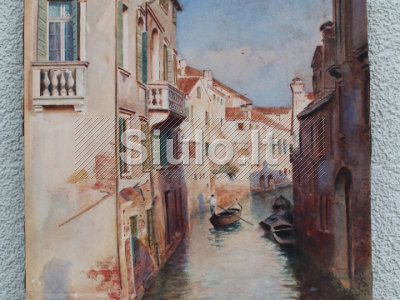
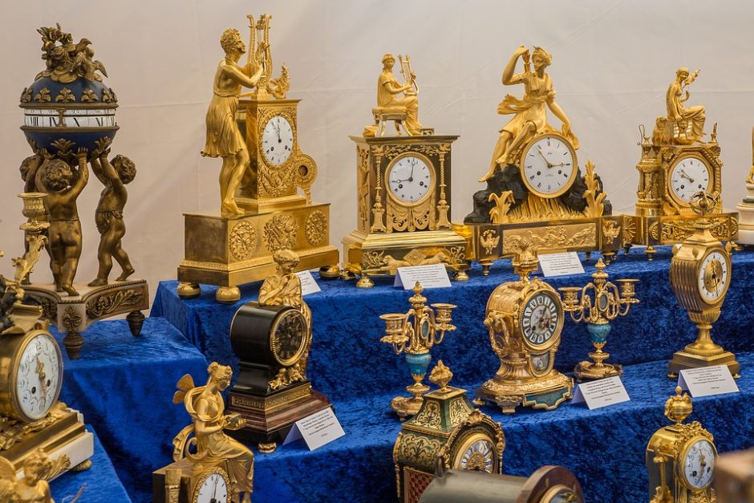
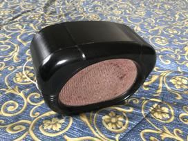

Antikvariniai daiktai • Oldtimers forumas
2020.10.30 04:30
Oldtimers forumas
Senovinių transporto priemonių gerbėjai Diskusijos Taisyklės Skelbimai Parduodu transportą Perku transportą Atliekami darbai Aukcionai Turgeliai Parduodu dalis ir kita Perku dalis ir kita Antikvariniai daiktai Dovanoju Tapatybė Plačiau apie tai Facebook Kontaktai Prisijungti Registruotis DUK Ieškoti Dabar yra 2020 Spa 30 Pen, 6:30Peržiūrėti neatsakytus pranešimus | Peržiūrėti aktyvias temas
Pagrindinis diskusijų puslapis » Visa kita » Antikvariniai daiktai
Visos datos yra UTC + 2 valandos [ DST ]
Forumo taisyklės
Tema skirta tik diskusijoms.
Komerciniai skelbimai keliami čia: viewforum.php?f=56
Antikvariniai daiktai
Moderatoriai: Shumeras , Moderatoriai
Puslapis 1 iš 9
[ 165 temų ] Eiti į 1 , 2 , 3 , 4 , 5 ... 9 Kitas Temos Autorius Atsakymai Peržiūrėta Paskutinis pranešimas Svarbūs pranešimai Nauji forumo skyreliai skirti antikvarinių daiktų komercijai
Pozityvus
0
6623
2012 Sau 13 Pen, 17:46
Pozityvus
Temos Atsakyta Kas tai?plomba?ecka000
2
829
2020 Geg 02 Šeš, 19:04
Bamperis
Neatsakyta kepurefeisas
3
3002
2020 Vas 02 Sek, 23:59
GINTIL
Neatsakyta Kirtiklis?Paulyx
4
1501
2020 Vas 02 Sek, 23:54
GINTIL
Neatsakyta Dujokaukių dežutės?Paulyx
4
1441
2019 Gru 04 Tre, 10:29
Paulyx
Neatsakyta Apranga?Paulyx
1
936
2019 Gru 03 Ant, 0:01
Paulyx
DetalėD.R.P.
2
2438
2019 Geg 09 Ket, 14:42
Tadas_2
Kokį kondensatorių naudoti?virgas
4
1708
2019 Geg 02 Ket, 15:58
virgas
Radiola MINSK-61[ Eiti į: 1 , 2 ]
Simakas
19
5190
2019 Bal 16 Ant, 10:51
Vismantas
Malūno ratasLedūklis
0
1100
2019 Kov 04 Pir, 1:16
Ledūklis
Geležinė krosnislaimisas
3
1613
2019 Sau 09 Tre, 11:41
laimisas
Padekit del kompresoriaus modelioneriuz
2
1126
2018 Gru 20 Ket, 23:36
neriuz
Neatsakyta Rašymo mašinaDovydass
1
1341
2018 Gru 18 Ant, 19:19
GINTIL
Kirvislohnert
6
1960
2018 Lap 02 Pen, 16:24
lohnert
Jungikliai,rozetės ir pan.[ Eiti į: 1 ... 58 , 59 , 60 ]
sth55
596
47820
2018 Rgs 11 Ant, 23:40
Ledūklis
Tepalas matavimo įrankiamsGvidas
5
2006
2018 Rgp 26 Sek, 22:54
DRV
Seni dulkiu siurbliai[ Eiti į: 1 , 2 , 3 ]
sth55
23
4412
2018 Rgp 12 Sek, 21:41
Alexx
Sena knygaabsurds
1
2494
2018 Kov 22 Ket, 20:03
GINTIL
NAUJOS seno modelio rozetės 30vnt dėžutėje.Klasikas
0
1452
2018 Kov 18 Sek, 22:04
Klasikas
Laikrodziai - kelintu metu ir kaip vadinasi ?romas1985
2
2738
2017 Gru 18 Pir, 22:01
vabaliukas
Zaislas tarpukario?algisb2
0
1655
2017 Lap 24 Pen, 19:32
algisb2
Puslapis 1 iš 9[ 165 temų ] Eiti į 1 , 2 , 3 , 4 , 5 ... 9 Kitas
Pagrindinis diskusijų puslapis » Visa kita » Antikvariniai daiktai
Visos datos yra UTC + 2 valandos [ DST ]
Dabar prisijungę
Vartotojai naršantys šį forumą: Registruotų vartotojų nėra ir 1 svečias
Neperskaityti pranešimai Neperskaitytų pranešimų nėra Svarbi Yra neperskaitytų pranešimų [ Populiari ] Neperskaitytų pranešimų nėra [ Populiari ] Dažna Yra neperskaitytų pranešimų [ Užrakinta ] Neperskaitytų pranešimų nėra [ Užrakinta ] Tema perkelta Jūs negalite kurti naujų temų šiame forume
Jūs negalite atsakinėti į temas šiame forume Patvirtinkite tapatybę
Jūs negalite redaguoti savo pranešimų šiame forume Patvirtinkite tapatybę
Jūs negalite trinti savo pranešimų šiame forume
Jūs negalite prikabinti failų šiame forume
Farming Simulator 19 Modhub , Minecraft Dungeons Mods , Farming Simulator 2019 Modhub . ets2 mods , ats mods , FS19 mods , ets 2 mods download . Farming simulator 2019 mods . Mašinų supirkimas . Automobilių dalys iš rrr.lt . sunkvežimių dalys . Autoera.lt .
Powered by phpBB ® Forum Software © phpBB Group
Vertė Vilius Šumskas © 2003, 2005, 2007
Puslapis 1 iš 6
1 , 2 , 3 , 4 , 5 , 6 Paskutinės sukurtos temos Atsakyta Kas tai?plomba?
ecka000 2020 Geg 02 Šeš, 13:45
Neatsakyta kepurefeisas 2019 Rgp 22 Ket, 20:52
Neatsakyta Kirtiklis?Paulyx 2019 Lap 23 Šeš, 22:46
Neatsakyta Dujokaukių dežutės?Paulyx 2019 Lap 23 Šeš, 23:12
Neatsakyta Apranga?Paulyx 2019 Lap 23 Šeš, 22:38
DetalėD.R.P. 2019 Kov 25 Pir, 15:04
Kokį kondensatorių naudoti?virgas 2019 Geg 01 Tre, 12:10
Puslapis 1 iš 6
1 , 2 , 3 , 4 , 5 , 6 Paskutinės aktyvios temos Atsakyta Kas tai?plomba?
forume Antikvariniai daiktai
Paskutinis pranešimas:2020 Geg 02 Šeš, 19:04
Bamperis
Neatsakyta kepureforume Antikvariniai daiktai
Paskutinis pranešimas:2020 Vas 02 Sek, 23:59
GINTIL
Neatsakyta Kirtiklis?forume Antikvariniai daiktai
Paskutinis pranešimas:2020 Vas 02 Sek, 23:54
GINTIL
Neatsakyta Dujokaukių dežutės?forume Antikvariniai daiktai
Paskutinis pranešimas:2019 Gru 04 Tre, 10:29
Paulyx
Neatsakyta Apranga?forume Antikvariniai daiktai
Paskutinis pranešimas:2019 Gru 03 Ant, 0:01
Paulyx
Detalėforume Antikvariniai daiktai
Paskutinis pranešimas:2019 Geg 09 Ket, 14:42
Tadas_2
Kokį kondensatorių naudoti?forume Antikvariniai daiktai
Paskutinis pranešimas:2019 Geg 02 Ket, 15:58
virgas
Įvairiais klausimais rašykite forumo administracijai į
Į viršų
- Antikvariniai daiktai • Oldtimers forumas
- Antikvariniai Vintage Retro daiktai - Parduodunaudota.lt
- Antikvariniai daiktai Rugsėjis 2020
- antikvariniai daiktai skelbimai | Skelbimai.lt - nemokami ...
- Antikvariniai ginklai I Ginklu parduotuve I Karinis I ...
- Antikvariniai daiktai ir kolekcionavimas: žinynai ...
- AntikvariniaiBaldai.LT - antikvariniai ir senoviniai baldai
- Senoviniai, antikvariniai daiktai, dekoro detalės ...
- antikvariniai daiktai skelbimai - Skelbiu.lt
- SENOVĖS PRABANGA – Prekyba senoviniais ir antikvariniais ...
- Antikvariniai daiktai • Oldtimers forumas
Antikvariniai daiktai 1) Skyrelyje „Perku / Parduodu senienas, antikvarinius daiktus“ talpinami skelbimai ir aukcionai. Šiame skyrelyje vyksta prekyba tik daiktais: interjeras, buitiniai rakandai, ekipuotė, plokštelės, monetos ir t.t. Amžiaus cenzas 30 metų.
- Antikvariniai Vintage Retro daiktai - Parduodunaudota.lt
forume Antikvariniai daiktai. Paskutinis pranešimas: 2019 Gru 04 Tre, 10:29. Paulyx Neatsakyta Apranga? forume Antikvariniai daiktai. Paskutinis pranešimas: 2019 Gru 03 Ant, 0:01. Paulyx Detalė. forume Antikvariniai daiktai. Paskutinis pranešimas: 2019 Geg 09 Ket, 14:42. Tadas_2. Kokį kondensatorių naudoti? forume Antikvariniai daiktai ...
- Antikvariniai daiktai Rugsėjis 2020
Antikvariniai daiktai Kiekvienas gyvenimas turi savo asmeninę didelę šventę, tačiau taip pat yra bendras vieningas, linksmas - Naujųjų metų! Pagrindinė jo puošmena jau seniai buvo Kalėdų eglutė, ji pasirodė namuose su caro Petro įsakymais, ir tai jau šimtmetis, kad mus laimingi.
- antikvariniai daiktai skelbimai | Skelbimai.lt - nemokami ...
Antikvariniai, kolekciniai bei kiti senoviški, tarybiniai daiktai, senoviniai, antikvariniai baldai, lietuviški sendaikčiai. Visa informacija (daugiau daiktų, nuotraukos bei KAINOS) tinklapyje: www.antikvaraskaune.lt Tinklalapis nuolat atnaujinamas. Siunčiu ir į kitus miestus Jums patogiu būdu.
- Antikvariniai ginklai I Ginklu parduotuve I Karinis I ...
Gal ką sudomintų senoviniai tarybiniai staliniai laikrodžiai. Patvarkius galėtų tikti interjerui ar kolekcionavimui kaip antikvariniai daiktai. Kaina po 3-4 Eur už vieną. Kreiptis Kaune: tel. 8(37)727735.
- Antikvariniai daiktai ir kolekcionavimas: žinynai ...
Antikvariniai daiktai ir kolekcionavimas: knygos, rankraščiai, įv. spaudiniai (anglų k.) Antikvariniai daiktai ir kolekcionavimas: paveikslai, meno spaudiniai ir žemėlapiai (anglų k.) Antikvariniai daiktai ir kolekcionavimas: žaislai, žaidimai, lėlės ir modeliukai (anglų k.)
- AntikvariniaiBaldai.LT - antikvariniai ir senoviniai baldai
Kolekcionavimo forumai, straipsniai, diskusijos apie kolekcionavimą ir asmeninės kolekcijos sudarymą, eksponavimą, naujienos, įvairūs apmąstymai apie kolekcionavimo tendencijas pasaulyje ir Lietuvoje
- Senoviniai, antikvariniai daiktai, dekoro detalės ...
6. Antikvariniai daiktai išlaiko arba padidina vertę. Gerai prižiūrimų antikvarinių daiktų vertė laikui bėgant didėja. Nors kainos kyla ir krenta (beje daugelis ekspertų sako, kad dabar yra geriausias laikas investuoti į senovinius daiktus), antikvariniai daiktai yra gera investicija.
- antikvariniai daiktai skelbimai - Skelbiu.lt
5 antikvariniai daiktai, kurie privers patikėti vaiduokliais: Elektrinė kėdė. Tai buvo kėdė nepanaši į jokią kitą kėdę. Vienas žmogus užėjo į antikvarinių daiktų parduotuvę. Parduotuvėje jis ranka užkliudė kėdę ir pajuto, kad plaukeliai ant jo rankos pasistojo piestu, tarsi kėdė būtų turėjusi kokį nors elektros ...
- SENOVĖS PRABANGA – Prekyba senoviniais ir antikvariniais ...
Antikvariniai baldai, sendaikčiai ir interjero detalės Jūsų namams. Pristatome į namus visoje Lietuvoje. Žiūrėkite mūsų antikvarinių baldų katalogą.
Antikvariniai daiktai 1) Skyrelyje „Perku / Parduodu senienas, antikvarinius daiktus“ talpinami skelbimai ir aukcionai. Šiame skyrelyje vyksta prekyba tik daiktais: interjeras, buitiniai rakandai, ekipuotė, plokštelės, monetos ir t.t. Amžiaus cenzas 30 metų.
forume Antikvariniai daiktai. Paskutinis pranešimas: 2019 Gru 04 Tre, 10:29. Paulyx Neatsakyta Apranga? forume Antikvariniai daiktai. Paskutinis pranešimas: 2019 Gru 03 Ant, 0:01. Paulyx Detalė. forume Antikvariniai daiktai. Paskutinis pranešimas: 2019 Geg 09 Ket, 14:42. Tadas_2. Kokį kondensatorių naudoti? forume Antikvariniai daiktai ...
Antikvariniai daiktai Kiekvienas gyvenimas turi savo asmeninę didelę šventę, tačiau taip pat yra bendras vieningas, linksmas - Naujųjų metų! Pagrindinė jo puošmena jau seniai buvo Kalėdų eglutė, ji pasirodė namuose su caro Petro įsakymais, ir tai jau šimtmetis, kad mus laimingi.
Antikvariniai, kolekciniai bei kiti senoviški, tarybiniai daiktai, senoviniai, antikvariniai baldai, lietuviški sendaikčiai. Visa informacija (daugiau daiktų, nuotraukos bei KAINOS) tinklapyje: www.antikvaraskaune.lt Tinklalapis nuolat atnaujinamas. Siunčiu ir į kitus miestus Jums patogiu būdu.
Gal ką sudomintų senoviniai tarybiniai staliniai laikrodžiai. Patvarkius galėtų tikti interjerui ar kolekcionavimui kaip antikvariniai daiktai. Kaina po 3-4 Eur už vieną. Kreiptis Kaune: tel. 8(37)727735.
Antikvariniai daiktai ir kolekcionavimas: knygos, rankraščiai, įv. spaudiniai (anglų k.) Antikvariniai daiktai ir kolekcionavimas: paveikslai, meno spaudiniai ir žemėlapiai (anglų k.) Antikvariniai daiktai ir kolekcionavimas: žaislai, žaidimai, lėlės ir modeliukai (anglų k.)
Kolekcionavimo forumai, straipsniai, diskusijos apie kolekcionavimą ir asmeninės kolekcijos sudarymą, eksponavimą, naujienos, įvairūs apmąstymai apie kolekcionavimo tendencijas pasaulyje ir Lietuvoje
6. Antikvariniai daiktai išlaiko arba padidina vertę. Gerai prižiūrimų antikvarinių daiktų vertė laikui bėgant didėja. Nors kainos kyla ir krenta (beje daugelis ekspertų sako, kad dabar yra geriausias laikas investuoti į senovinius daiktus), antikvariniai daiktai yra gera investicija.
5 antikvariniai daiktai, kurie privers patikėti vaiduokliais: Elektrinė kėdė. Tai buvo kėdė nepanaši į jokią kitą kėdę. Vienas žmogus užėjo į antikvarinių daiktų parduotuvę. Parduotuvėje jis ranka užkliudė kėdę ir pajuto, kad plaukeliai ant jo rankos pasistojo piestu, tarsi kėdė būtų turėjusi kokį nors elektros ...
Antikvariniai baldai, sendaikčiai ir interjero detalės Jūsų namams. Pristatome į namus visoje Lietuvoje. Žiūrėkite mūsų antikvarinių baldų katalogą.
  